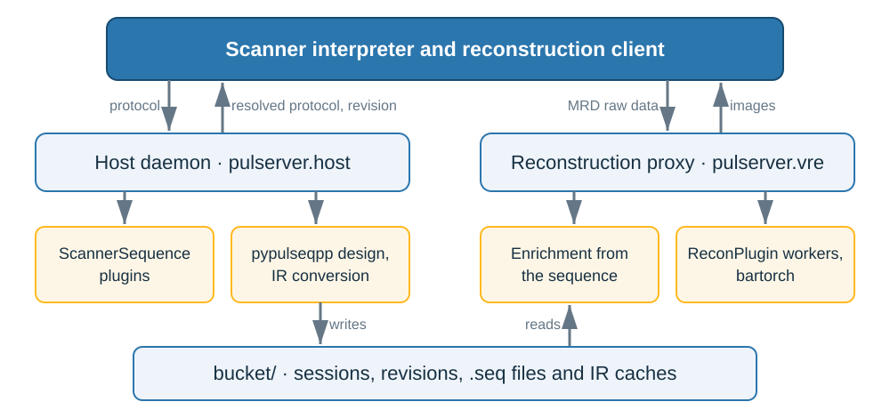

Homepage#


pulserver orchestrates MR acquisitions with Pulseq sequences on clinical scanners: sequence design, scanner preparation and reconstruction. It resolves the protocol an operator edits in the scanner UI against a pypulseqpp sequence application, converts the design into the segmented representation a scanner interpreter plays, and routes the raw data of each series, enriched from the sequence that acquired it, to a reconstruction, normally bartorch. Vendor-specific playout belongs to the scanner interpreters, which call pulserver’s services. Passing the checks pypulseqpp provides does not establish scanner or patient safety.
Features#
Protocol resolution: the echo time, repetition time and bandwidth a design achieves, the scan time, and the design error for an infeasible prescription.
Stateless design calls for every PSD host process of a scanner, one command per call or through a warm server, and a store of immutable designs named by their content.
Segmentation of a
NextSequencechain into a binary IR cache, read by an ANSI C library linked into the interpreter, with the prescribed field-of-view offset applied to the logical-frame design as RF and ADC frequency and phase.MRD enrichment: encoding counters, flags, encoding spaces and trajectories from the sequence.
Reconstruction plugins run in isolated worker processes, over a live MRD stream, an ISMRMRD file or an assembled acquisition bucket.

Quick start#
pip install pulserver
pulserver design serve --plugins sequences/ --socket /tmp/pulserver.sock
python -m pulserver.vre --store /srv/pulserver/designs --port 9002 --plugins recon/
Documentation#
The user guide covers installation and support, running the two services, and writing scanner-sequence and reconstruction plugins. The explanations describe the architecture, protocol resolution, the design store, the scanner IR and raw-data enrichment, and the examples execute each of them on a shipped pypulseqpp sequence. Every version of the documentation is published at https://pulserver.github.io/pulserver/.
Citation#
pulserver has no project publication. Cite the formats it is built on in work that uses it:
@article{layton2017pulseq,
title = {Pulseq: a rapid and hardware-independent pulse sequence prototyping framework},
author = {Layton, Kelvin J and Kroboth, Stefan and Jia, Feng and Littin, Sebastian
and Yu, Huijun and Leupold, Jochen and Nielsen, Jon-Fredrik
and St{\"o}cker, Tony and Zaitsev, Maxim},
journal = {Magnetic Resonance in Medicine},
volume = {77},
number = {4},
pages = {1544--1552},
year = {2017},
doi = {10.1002/mrm.26235}
}
@article{inati2017ismrmrd,
title = {{ISMRM} Raw data format: A proposed standard for {MRI} raw datasets},
author = {Inati, Souheil J and Naegele, Joseph D and Zwart, Nicholas R
and Roopchansingh, Vinai and Lizak, Martin J and Hansen, David C
and Liu, Chia-Ying and Atkinson, David and Kellman, Peter
and Kozerke, Sebastian and Xue, Hui and Campbell-Washburn, Adrienne E
and S{\o}rensen, Thomas S and Hansen, Michael S},
journal = {Magnetic Resonance in Medicine},
volume = {77},
number = {1},
pages = {411--421},
year = {2017},
doi = {10.1002/mrm.26089}
}
License#
MIT. See License and notices.